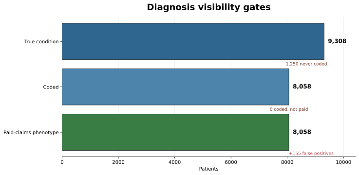
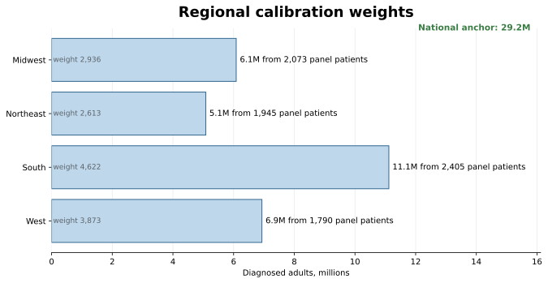
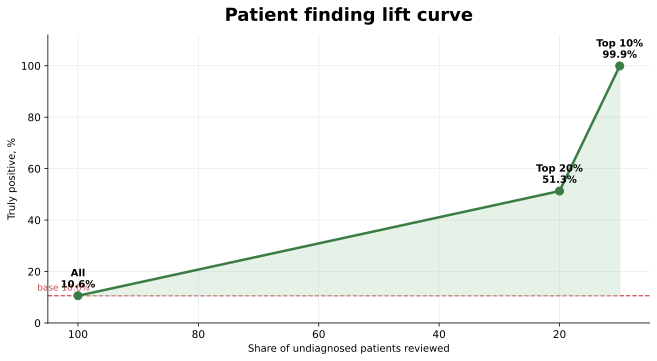
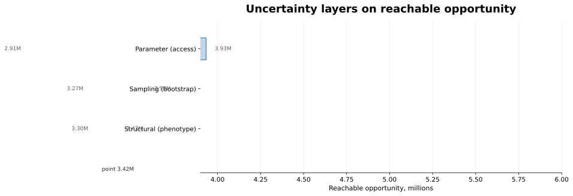
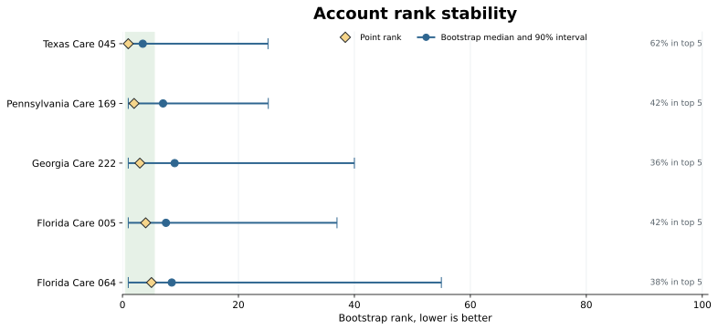
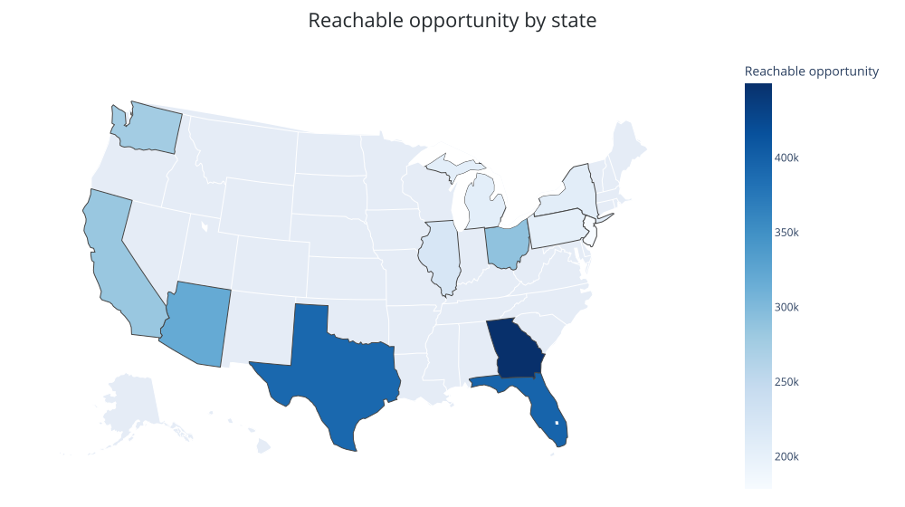

Chapter 4: Market Sizing and Patient Populations
The epidemiology team and the claims analyst often report market sizes that differ by a factor of two or more. In this chapter the gap is larger: the diagnosed population is 29 million, the untreated opportunity is 8 million, and both numbers come from the same disease and the same data. Each answers a different question, and the difference between them is made of business decisions about label, access, and competitive position.
This chapter builds a sequence of calculations from the Chapter 3 synthetic package that connects those two numbers and explains every patient between them. It starts from a precise market definition, narrows the population step by step through a national calibration and an opportunity funnel, estimates the patients no claim ever captured, and delivers the result at account level with enough uncertainty information for a reviewer to audit it.
Run the code blocks in order from the repository root, or open chapter4_walkthrough.ipynb to execute them as a notebook. The blocks build on each other: the first block assembles the patient table that the rest of the chapter reuses.
Note: The launch product is Roventra, a fictional once-daily oral medicine. Its competitors are Nexoral and Vexpro. The launch condition is modeled on Type 2 diabetes (ICD-10 codes E11.9, E11.65, E11.40), and the age threshold, access probabilities, and conversion rate are teaching devices, not a real product label or disease market. The
true_launch_conditioncolumn inpatients.csvis a synthetic teaching field that records each patient's actual condition. It does not exist in real claims data and is used only to validate the analysis results, never to drive them.
4.1 Five Market Size Definitions
How many patients are in the market? The question is incomplete. The answer changes the moment you specify whether you mean true disease, a coded diagnosis, paid-claims evidence, label eligibility, or treatment status. Each is a defensible market size, and they differ by more than threefold. Compute all five from the same panel:
Listing 4.1: Build the patient analysis table
import pandas as pd
DATA = "ch03_data/output_data/generated_data"
LAUNCH_CODES = ["E11.9", "E11.65", "E11.40"] # the launch condition in ICD-10
PRODUCT = "Roventra"
patients = pd.read_csv(f"{DATA}/reference/patients.csv")
enroll = pd.read_csv(f"{DATA}/reference/patient_enrollments.csv")
patients = patients.merge(
enroll[["patient_id", "payer_id"]].drop_duplicates("patient_id"),
on="patient_id", how="left",
)
DX_COLS = [f"diagnosis_{i}" for i in range(1, 11)]
mc = pd.read_csv(f"{DATA}/claims_medical/medical_claims_mature.csv")
dx_mask = mc[DX_COLS].isin(LAUNCH_CODES).any(axis=1)
coded = mc[dx_mask]
paid_dx_count = coded.groupby("patient_id").size()
rx = pd.read_csv(f"{DATA}/claims_pharmacy/pharmacy_claims.csv",
dtype={"ndc": str, "ndc_prescribed": str})
ndc = pd.read_csv(f"{DATA}/reference/ndc_codes.csv", dtype={"ndc": str})
rx["drug_name"] = rx.ndc_prescribed.map(ndc.set_index("ndc").drug_name)
roventra = rx[rx.drug_name.eq(PRODUCT)].copy()
roventra["net"] = roventra.transaction_type.map({"PAID": 1, "REVERSED": -1}).fillna(0)
net_fills = roventra.groupby("patient_id").net.sum()
p = patients.copy()
p["true_condition"] = p["true_launch_condition"].fillna(False).astype(bool)
p["coded"] = p.patient_id.isin(coded.patient_id)
p["diagnosed"] = p.patient_id.map(paid_dx_count).fillna(0).ge(1)
p["diagnosed_2plus"] = p.patient_id.map(paid_dx_count).fillna(0).ge(2)
p["age_eligible"] = p.age_band.isin(["35-49", "50-64", "65+"])
p["treated"] = p.patient_id.map(net_fills).fillna(0).gt(0)
p["untreated"] = ~p.treated
That block is the analytic table the chapter reuses. The drug name is derived by joining the NDC reference, exactly as in Chapter 3, because the pharmacy file carries only the NDC. The treatment flag uses net fills, so a paid fill that is later reversed does not count as treatment. Now read the five market sizes off that table:
sizes = pd.DataFrame([
("True condition (answer key)", p.true_condition.sum()),
("Launch diagnosis coded", p.coded.sum()),
("Paid-claims phenotype", p.diagnosed.sum()),
("Age-eligible diagnosed", (p.diagnosed & p.age_eligible).sum()),
("Untreated opportunity", (p.diagnosed & p.age_eligible & p.untreated).sum()),
], columns=["market_size", "patients"])
print(sizes.to_string(index=False))
market_size patients
True condition (answer key) 9308
Launch diagnosis coded 8213
Paid-claims phenotype 8213
Age-eligible diagnosed 6998
Untreated opportunity 2278
Five numbers, one disease. The first row is the answer key, an internal teaching field rather than something you could observe in production. The rest are sequential: each rule removes patients the one above it kept. The last number, the untreated opportunity, is a clean subtraction within one cohort:
eligible = p.diagnosed & p.age_eligible
print(f"age-eligible diagnosed: {eligible.sum()}")
print(f"treated within cohort: {(eligible & p.treated).sum()}")
print(f"untreated opportunity: {(eligible & p.untreated).sum()}")
age-eligible diagnosed: 6998
treated within cohort: 4720
untreated opportunity: 2278
The formal name for a precisely defined market quantity is an estimand. You do not need a formula to use one. You state, in order, who enters the population and which rule removes or discounts them. Table 4.1 is that statement for these five rows.

Figure 4.1. Each row starts from the same 9,308 true-condition patients. Colored dots show the share retained as the market question becomes more specific. Synthetic data.
Table 4.1. The estimand record states each decision rule in plain language.
| Stage | Rule | Panel count | What the number means |
|---|---|---|---|
| True condition | Synthetic answer key | 9,308 | Patients who truly have the condition |
| Diagnosis recorded | Launch code in the mature claim file | 8,213 | Patients with recorded diagnosis evidence |
| Visible in claims | 1+ mature launch-diagnosis claim | 8,213 | Patients found by the working claims phenotype |
| Age eligible | Age 35 or older | 6,998 | Diagnosed patients who meet the illustrative age rule |
| Untreated opportunity | No net Roventra use | 2,278 | Eligible diagnosed patients not currently treated |
Later sections attach population weights and access probabilities. Those turn some rows into national totals and expected values, but the patient rules stay exactly these.
4.2 What Claims Can See
A disease can exist without appearing as a diagnosis in claims, and a diagnosis can appear without the patient truly having the disease. The synthetic generator represents both, so you can measure the gap instead of assuming it away. Trace the launch condition from truth through coding to paid evidence:
gates = pd.DataFrame([
("True condition (answer key)", p.true_condition.sum()),
("... coded with a launch diagnosis", (p.true_condition & p.coded).sum()),
("... found by the paid-claims phenotype", (p.true_condition & p.diagnosed).sum()),
("False positives (other condition, flagged)",(~p.true_condition & p.diagnosed).sum()),
], columns=["gate", "patients"])
print(gates.to_string(index=False))
true_n = int(p.true_condition.sum())
print(f"\ncoded share: {100*(p.true_condition & p.coded).sum()/true_n:.1f}%")
print(f"captured share: {100*(p.true_condition & p.diagnosed).sum()/true_n:.1f}%")
gate patients
True condition (answer key) 9308
... coded with a launch diagnosis 8058
... found by the paid-claims phenotype 8058
False positives (other condition, flagged) 155
coded share: 86.6%
captured share: 86.6%
Claims visibility passes through a diagnosis gate. In this mature claims file, 86.6% of true patients receive a launch code at least once. The phenotype keeps those same mature diagnosis records, so the coded and phenotype counts match. A separate 155 patients with another condition pick up a launch code through rule-out coding or noise and become false positives. These percentages describe this source and this rule.
One specific patient makes the first gap concrete. Find the first true patient the phenotype misses, by a documented rule rather than a hand-pick:
invisible = p[p.true_condition & ~p.diagnosed & ~p.treated].sort_values("patient_id")
pid = invisible.iloc[0].patient_id
print("first invisible true patient:", pid)
print(p.loc[p.patient_id.eq(pid), ["patient_id", "region", "age_band", "payer_id"]].to_string(index=False))
print(mc.loc[mc.patient_id.eq(pid), ["claim_date"] + DX_COLS[:3]].to_string(index=False))
print(rx.loc[rx.patient_id.eq(pid),
["date_of_service", "drug_name", "transaction_type", "reject_code"]].to_string(index=False))
first invisible true patient: PAT00046
patient_id region age_band payer_id
PAT00046 Northeast 18-34 PAY002
claim_date diagnosis_1 diagnosis_2 diagnosis_3
2024-06-28 F41.9 J45.909 E78.5
date_of_service drug_name transaction_type reject_code
2024-06-09 Vexpro PENDED 70.0
2024-06-13 Vexpro PAID NaN
2024-07-06 Vexpro PAID NaN
PAT00046 truly has the launch condition, but the mature medical claim records anxiety, asthma, and dyslipidemia instead. The pharmacy record shows 2 paid Vexpro fills after a pended transaction. This is a patient treated on a competitor, invisible to a phenotype that requires a recorded launch diagnosis and absent from the clean paid-Roventra source. A more elaborate query cannot recover a diagnosis code the source never captured. PAT00046 returns in Section 4.6, where capture-recapture estimates how many patients like this exist, and again in Section 4.7, where a model ranks patients like this for review.

Figure 4.2. The mature claim file misses 1,250 true patients with no launch diagnosis code and adds 155 other-condition patients through coding noise. Synthetic data.
4.3 Validate the Phenotype Against the Answer Key
A claims phenotype converts records into a patient flag. The simplest choice is how much evidence to require: at least one paid launch diagnosis, or at least two. The synthetic answer key lets you score both rules the way a validation study would, except here the truth is known for every patient.
Listing 4.2: Score two phenotype rules against the answer key
def diagnostics(flag, truth):
tp = int((flag & truth).sum())
fp = int((flag & ~truth).sum())
fn = int((~flag & truth).sum())
return dict(true_positive=tp, false_positive=fp, false_negative=fn,
sensitivity=round(tp / (tp + fn), 3),
precision=round(tp / (tp + fp), 3))
diag = pd.DataFrame([
{"rule": "1+ paid diagnosis", **diagnostics(p.diagnosed, p.true_condition)},
{"rule": "2+ paid diagnoses", **diagnostics(p.diagnosed_2plus, p.true_condition)},
])
print(diag.to_string(index=False))
print("\nstrict rule misses this many extra true patients:",
int((p.diagnosed & p.true_condition).sum()
- (p.diagnosed_2plus & p.true_condition).sum()))
rule true_positive false_positive false_negative sensitivity precision
1+ paid diagnosis 8058 155 1250 0.866 0.981
2+ paid diagnoses 6008 0 3300 0.645 1.000
strict rule misses this many extra true patients: 2050
The one-claim rule finds 86.6% of true patients and keeps 98.1% of flagged patients correct. Requiring a second diagnosis removes all 155 false positives in this synthetic file, but it also drops 2,050 true patients. The stricter rule is cleaner and smaller.

Figure 4.3. Requiring a second diagnosis removes the 155 false positives but misses 2,050 more true patients. Synthetic data.
The strict rule reaches 100% precision here because the planted false-positive patients each have a single launch diagnosis. Real validation studies are usually messier. When no reference standard exists, carry more than one phenotype rule through the sizing run instead of presenting one rule as truth. Section 4.8 shows how much this choice moves the answer.
4.4 Anchor the Denominator Outside Your Data
The paid-claims phenotype contains 8,213 patients, 41.1% of the 20,000-patient panel. That share is an artifact. The panel was deliberately enriched for the launch condition so readers would have enough records to analyze. Use a public prevalence anchor for national scale:
US_ADULTS = 258_554_106 # 2024 Census resident population age 20+
PREVALENCE = 0.113 # NCHS Data Brief 516: diagnosed diabetes, adults 20+
panel_share = p.diagnosed.mean()
print(f"panel diagnosis share: {panel_share:.3f} ({p.diagnosed.sum()} of {len(p)})")
print(f"naive extrapolation: {panel_share * US_ADULTS:,.0f}")
print(f"external prevalence anchor: {PREVALENCE * US_ADULTS:,.0f}")
panel diagnosis share: 0.411 (8213 of 20000)
naive extrapolation: 106,175,244
external prevalence anchor: 29,216,614
The panel share is useful for composition, not prevalence. The national scale comes from the diagnosed-diabetes prevalence in NCHS Data Brief 516 (11.3% of U.S. adults age 20 and older, August 2021 through August 2023) and the 2024 Census adult population of 258,554,106:

Figure 4.4. The external 29.2 million diagnosed-patient anchor is allocated by region, then returned to observed panel patients as weights. Synthetic analysis with public anchors.
The panel can still describe who its patients are. It just cannot say how common the disease is. To carry the national total back to the panel without giving every patient the same weight, allocate the national target across regions by population share, then weight each observed diagnosed patient so its region sums to that target:
REGION_POP = {"Northeast": 57_609_148, "South": 126_018_935,
"Midwest": 68_985_454, "West": 78_588_572}
national_target = round(PREVALENCE * US_ADULTS)
region_total = sum(REGION_POP.values())
targets = {r: round(national_target * pop / region_total) for r, pop in REGION_POP.items()}
targets["South"] += national_target - sum(targets.values()) # absorb rounding
observed = p[p.diagnosed].groupby("region").size()
bridge = pd.DataFrame([
{"region": r, "target_diagnosed": targets[r], "observed_diagnosed": int(observed[r]),
"weight_per_patient": round(targets[r] / observed[r], 1)} for r in REGION_POP])
print(bridge.to_string(index=False))
weights = {r: targets[r] / observed[r] for r in targets}
p["population_weight"] = 0.0
p.loc[p.diagnosed, "population_weight"] = p.loc[p.diagnosed, "region"].map(weights)
region target_diagnosed observed_diagnosed weight_per_patient
Northeast 5081925 1945 2612.8
South 11116615 2405 4622.3
Midwest 6085473 2073 2935.6
West 6932601 1790 3873.0
Each observed Northeast patient now stands for about 2,613 diagnosed adults, each Southern patient for about 4,622. These are not regional prevalence estimates. Every region receives the same national 11.3% anchor through its population share. Published prevalence sets the scale, Census supplies the denominator, and the panel supplies composition for the eligibility, treatment, access, and account steps that follow.
This regional weighting is the simplest form of post-stratification. The modern generalization, multilevel regression and post-stratification (MRP), replaces the raw regional rate with a model. Fit diagnosis probability on patient attributes, predict a rate for each demographic cell, then weight cells by their population share:
from sklearn.linear_model import LogisticRegression
cells = pd.get_dummies(p[["age_band", "region", "sex"]], drop_first=True)
model = LogisticRegression(max_iter=1000).fit(cells, p.diagnosed.astype(int))
p["model_dx_rate"] = model.predict_proba(cells)[:, 1]
summary = (p.groupby(["age_band", "region"])
.agg(n=("patient_id", "size"), raw=("diagnosed", "mean"), model=("model_dx_rate", "mean"))
.head(4).round(3))
print(summary.to_string())
n raw model
age_band region
18-34 Midwest 738 0.432 0.419
Northeast 719 0.399 0.411
South 808 0.455 0.435
West 619 0.389 0.424
Here the model rate stays close to the raw rate, because each cell holds hundreds of patients. That is the honest result for a large, balanced panel. MRP earns its keep when cells are small or when the target population's age and region mix differs from the panel's, so a raw cell rate would be noisy or misallocated. Appendix 4A carries the full method and the small-cell case where it changes the answer.
4.5 Build the Opportunity Funnel
Calibration fixes the starting scale. The remaining operators narrow the question. Two of them remove patients, and two multiply by a probability, so the funnel mixes weighted counts with expected values. State the access assumptions before using them:
ACCESS_PROBABILITY = {"Covered": 0.90, "Covered with PA": 0.65, "Non-covered": 0.10}
These three numbers are scenario constants, not measured conversion rates. They say that an untreated, eligible patient on a plan that covers Roventra outright is far more reachable than one whose plan does not cover it. Attach each patient's probability from the access rule in force on the analysis date, then build the funnel:
Listing 4.3: Assemble the nationally anchored opportunity funnel
access = pd.read_csv(f"{DATA}/market_access/market_access_rules.csv",
parse_dates=["effective_start", "effective_end"])
ANALYSIS_DATE = pd.Timestamp("2024-12-31")
rules = access[access.product_name.eq(PRODUCT)
& access.effective_start.le(ANALYSIS_DATE)
& access.effective_end.ge(ANALYSIS_DATE)]
p = p.merge(rules[["payer_id", "region", "coverage_status"]],
on=["payer_id", "region"], how="left")
p["access_probability"] = p.coverage_status.map(ACCESS_PROBABILITY).fillna(0.0)
elig = p.diagnosed & p.age_eligible
untr = elig & p.untreated
diagnosed_pop = p.loc[p.diagnosed, "population_weight"].sum()
age_pop = p.loc[elig, "population_weight"].sum()
untreated_pop = p.loc[untr, "population_weight"].sum()
reachable = (p.loc[untr, "population_weight"] * p.loc[untr, "access_probability"]).sum()
expected_starts = reachable * 0.25
funnel = pd.DataFrame([
("Diagnosed population", diagnosed_pop, "count"),
("Age eligible", age_pop, "count"),
("Untreated opportunity", untreated_pop, "count"),
("Reachable (access-adjusted)", reachable, "expected"),
("Expected starts (25%)", expected_starts, "expected"),
], columns=["stage", "population", "type"])
funnel["population"] = funnel["population"].map(lambda v: f"{v:,.0f}")
print(funnel.to_string(index=False))
stage population type
Diagnosed population 29,216,614 count
Age eligible 24,895,896 count
Untreated opportunity 8,110,331 count
Reachable (access-adjusted) 3,420,603 expected
Expected starts (25%) 855,151 expected

Figure 4.5. The first three stages are weighted counts. Access and conversion turn the last two into expected values. Synthetic analysis with public anchors.
The age rule keeps 6,998 of 8,213 diagnosed panel patients, which scales to 24.9 million. Treatment then keeps the untreated share, measured from the panel rather than assumed: 2,278 of 6,998, or 32.6%, are untreated, producing 8.1 million. Access works differently. It multiplies each patient's weight by a coverage probability, so no patient is removed; the same 2,278 records remain, each contributing a fractional expected value of 3.4 million reachable patients. The 25% conversion scenario is one more multiplication, giving 855,151 expected starts. A row should show a sample count only where a rule creates a subset; access and conversion are expected counts, and the figure marks where the funnel crosses that line.
Claims maturity can still move the count. Section 3 of Chapter 3 showed that a recent month is always incomplete. The same lag applies to a sizing run: a treatment count taken in early 2025 has not yet seen all of late 2024. Under a simple teaching scenario where two thirds of claims have arrived at four months, the untreated count reads lower:
arrived = 2 / 3 # teaching scenario, not a measured lag curve
print(f"untreated at full maturity: {untreated_pop:,.0f}")
print(f"untreated at 4-month maturity: {untreated_pop * arrived:,.0f}")
print(f"not yet arrived: {untreated_pop * (1 - arrived):,.0f}")
untreated at full maturity: 8,110,331
untreated at 4-month maturity: 5,406,887
not yet arrived: 2,703,444
A run against immature claims would report 5.4 million untreated patients instead of 8.1 million, a 33% understatement that is purely an artifact of timing. The two-thirds factor here is a scenario. A production analysis estimates the arrival curve from historical completion data, exactly as Chapter 3 did from the receipt-lag distribution.
4.6 Estimate the Unobserved Population
PAT00046 is invisible because no claim records the launch diagnosis. How many patients like this exist? With the answer key closed, you would not know. Capture-recapture estimates it from the overlap between two imperfect sources.
The method uses the overlap between two sources. If the second source mostly contains patients already seen in the first source, the unseen population is probably small. If the overlap is thin, the unseen population is larger. For patients, the mark is a patient identifier appearing in both sources: medical claims and pharmacy claims.
The choice of which records define each source decides whether the method works. Try the natural-looking version first, pairing a paid launch diagnosis against a paid fill for any drug in the class:
Listing 4.4: Two capture-recapture pairings, one contaminated and one clean
def chapman(source_a, source_b):
n1, n2 = len(source_a), len(source_b)
m = len(source_a & source_b)
n_hat = (n1 + 1) * (n2 + 1) / (m + 1) - 1
var = (n1 + 1) * (n2 + 1) * (n1 - m) * (n2 - m) / ((m + 1) ** 2 * (m + 2))
se = var ** 0.5
return n1, n2, m, n_hat, 1.96 * se
paid_dx = set(coded.patient_id)
paid_rx = rx[rx.transaction_type.eq("PAID")]
class_drugs = ["Roventra", "Nexoral", "Vexpro"]
for label, source_b in [
("contaminated (drug class)", set(paid_rx[paid_rx.drug_name.isin(class_drugs)].patient_id)),
("condition-specific (Roventra)", set(paid_rx[paid_rx.drug_name.eq(PRODUCT)].patient_id)),
]:
n1, n2, m, n_hat, ci = chapman(paid_dx, source_b)
print(f"{label:<30} n1={n1} n2={n2} m={m} Chapman={n_hat:,.0f} "
f"CI=[{n_hat-ci:,.0f}, {n_hat+ci:,.0f}]")
contaminated (drug class) n1=8213 n2=13633 m=6943 Chapman=16,127 CI=[16,022, 16,231]
condition-specific (Roventra) n1=8213 n2=6401 m=5541 Chapman=9,488 CI=[9,435, 9,540]
The contaminated pairing estimates 16,127 patients, far above the truth. The flaw is in the second source. Nexoral and Vexpro are established competitors that are also dispensed for other conditions, so a pharmacy source built from the whole class captures patients who do not have the launch condition. Capture-recapture assumes both sources sample the same population; the drug class breaks that assumption. Roventra is specific to the launch condition, so the condition-specific pairing keeps both sources on the same population and lands at 9,488. The Chapman estimator adds one to each count before dividing, which corrects the small-sample bias in the raw Lincoln-Petersen ratio \(N \approx n_1 n_2 / m_2\):
Now open the answer key and grade the clean estimate:
truth = int(p.true_condition.sum())
n1, n2, m, n_hat, _ = chapman(paid_dx, set(paid_rx[paid_rx.drug_name.eq(PRODUCT)].patient_id))
print(f"truth (answer key): {truth}")
print(f"Chapman estimate: {n_hat:,.0f} ({100*(n_hat-truth)/truth:+.1f}%)")
print(f"observed union: {n1 + n2 - m}")
print(f"estimated unseen: {n_hat - (n1 + n2 - m):,.0f}")
truth (answer key): 9308
Chapman estimate: 9488 (+1.9%)
observed union: 9073
estimated unseen: 415
The estimate is 180 patients high, within 1.9% of the true 9,308, and the true count sits below the 95% interval. PAT00046 is one of the patients in neither clean source. The accuracy here rests on strong assumptions: a closed population, correct record linkage, condition-specific sources, similar capture probabilities, and enough independence between the two systems. In real data, sicker patients are more likely to appear in both medical and pharmacy records, which biases the estimate downward. Report those assumptions beside the number. The bias adjustment traces to D. G. Chapman's 1951 monograph; its epidemiology use is reviewed by the International Working Group for Disease Monitoring and Forecasting (I, II).

Figure 4.6. The overlap between two condition-specific sources estimates how many patients both miss. Pairing against the whole drug class breaks the shared-population assumption and nearly doubles the estimate. Synthetic data.
4.7 Patient Finding: From Count to List
Capture-recapture says about 415 launch-condition patients sit outside both clean sources. It gives a count, not names. The brand cannot send a chart-review nurse to a number. Machine-learning patient finding turns the count into a ranked list: train a model on the patients you are sure about, then score the ones you are not.
The setup avoids circularity. The label is the confirmed phenotype. The features describe everything except the launch diagnosis itself: overall medical activity, competitor and supportive pharmacy fills, A1C lab values, an antidiabetic medication order, and demographics. A patient on a competitor drug with a high A1C and no coded diagnosis is exactly who the model should flag.
Listing 4.5: Rank undiagnosed patients by probability of the true condition
from sklearn.ensemble import GradientBoostingClassifier
from sklearn.model_selection import train_test_split
from sklearn.metrics import roc_auc_score
lab = pd.read_csv(f"{DATA}/claims_lab/lab_results.csv")
a1c = lab[lab.test_name.eq("Hemoglobin A1c")]
diabetes_rx_patients = rx[
rx.diagnosis_code.str.startswith("E11", na=False)
& rx.transaction_type.eq("PAID")
].patient_id
f = p[["patient_id", "age_band", "region", "sex", "diagnosed", "true_condition"]].copy()
f["n_class_fills"] = f.patient_id.map(
paid_rx[paid_rx.drug_name.isin(class_drugs)].groupby("patient_id").size()
).fillna(0)
f["max_a1c"] = f.patient_id.map(a1c.groupby("patient_id")["result"].max()).fillna(0)
f["has_elevated_a1c"] = (f.max_a1c >= 6.5).astype(int)
f["diabetes_rx_proxy"] = f.patient_id.isin(diabetes_rx_patients).astype(int)
X = pd.get_dummies(f.drop(columns=["patient_id", "diagnosed", "true_condition"]),
columns=["age_band", "region", "sex"])
Xtr, Xte, ytr, yte = train_test_split(X, f.diagnosed.astype(int),
test_size=0.3, random_state=20260613, stratify=f.diagnosed)
clf = GradientBoostingClassifier(random_state=20260613).fit(Xtr, ytr)
f["score"] = clf.predict_proba(X)[:, 1]
print("held-out AUC (predicting the confirmed phenotype):",
round(roc_auc_score(yte, clf.predict_proba(Xte)[:, 1]), 3))
held-out AUC (predicting the confirmed phenotype): 0.93
The model never saw the launch diagnosis, yet it separates confirmed patients from the rest at 0.93 AUC, because the surrounding evidence (utilization, competitor fills, labs) carries most of the signal. Now point it at the undiagnosed patients and check the top of the list against the answer key:
undx = f[f.diagnosed.eq(0)].sort_values("score", ascending=False)
base = undx.true_condition.mean()
print(f"undiagnosed patients: {len(undx):,}")
print(f"truly positive among them: {int(undx.true_condition.sum()):,} ({100*base:.1f}%)")
for frac in (0.10, 0.20):
top = undx.head(int(len(undx) * frac))
print(f"top {int(frac*100):>2}%: {int(top.true_condition.sum()):,} true "
f"({100*top.true_condition.mean():.1f}%), lift {top.true_condition.mean()/base:.1f}x")
print("PAT00046 percentile among undiagnosed:",
round(100 * (undx.score < undx.set_index('patient_id').loc['PAT00046', 'score']).mean(), 1))
undiagnosed patients: 11,787
truly positive among them: 1,250 (10.6%)
top 10%: 1,177 true (99.9%), lift 9.4x
top 20%: 1,209 true (51.3%), lift 4.8x
PAT00046 percentile among undiagnosed: 94.4
Among 11,787 undiagnosed patients, 10.6% truly have the condition. The model's top decile is 99.9% true, a 9.4-fold lift, and PAT00046 lands at the 94.4th percentile, flagged for review. The lift is the deliverable: instead of reviewing 11,787 patients to find 1,250, the team can start with the highest-scored decile. This separation is cleaner than real patient finding, where top-decile precision of 40% to 70% is a strong result, because the synthetic utilization signal is unusually sharp. The technique is the same one used in production rare-disease and under-diagnosis programs, and it is the bridge from "how many are we missing" to "here is who to call." Appendix 4A covers the production extensions: sequence models over claim histories, NLP on clinical notes, and the governance a model that targets patients must carry.

Figure 4.7. The model ranks undiagnosed patients by probability of the true condition. The top decile is 99.9% true against a 10.6% base rate, a 9.4-fold lift. Synthetic data; the synthetic signal is sharper than real claims.
4.8 Quantify Uncertainty
A market size can move because the panel changes, a parameter changes, or the analysis structure changes. These are different questions, and a forecast review wants them separated. Table 4.2 names the four layers.
Table 4.2. Four uncertainty layers in the chapter workflow.
| Layer | Question | Method |
|---|---|---|
| Sampling | Would another panel give a different estimate? | Bootstrap within region and recalibrate |
| Parameter | What if access or conversion differs? | Scenario grid |
| Structural | What if the phenotype definition changes? | Rebuild and recalibrate with the strict rule |
| Ascertainment | How many patients do both sources miss? | Capture-recapture interval (Section 4.6) |
The sampling and parameter layers are the two most often confused, so compute both. The bootstrap resamples patients within region, recalibrates to the same anchor, and recomputes the reachable opportunity 1,000 times; the scenario grid varies access and conversion directly:
grid = []
for access_mult in (0.85, 1.00, 1.15):
row = {"access": access_mult}
for conv in (0.15, 0.25, 0.35):
row[f"conv_{int(conv*100)}"] = f"{reachable * access_mult * conv:,.0f}"
grid.append(row)
print(pd.DataFrame(grid).to_string(index=False))
access conv_15 conv_25 conv_35
0.85 436,127 726,878 1,017,629
1.00 513,090 855,151 1,197,211
1.15 590,054 983,423 1,376,793
The 1,000-replicate bootstrap gives a 95% interval of 3.27 million to 3.58 million around the 3.42 million reachable estimate. That interval reflects sample composition under the chosen model; it does not cover uncertainty in the external prevalence anchor. The scenario grid is wider, swinging expected starts from 436,000 to 1.38 million, because parameter uncertainty dominates sampling uncertainty here. The structural layer is smaller than both: recalibrating the strict two-claim phenotype to the same national anchor moves reachable opportunity from 3.42 million to 3.30 million, a 3.6% change, because the anchor pins the scale and the phenotype mainly changes composition. Keep the ascertainment interval from Section 4.6 separate, because capture-recapture estimates under-counting inside the panel while the external anchor sets the national total; combining them would correct for the missing population twice.

Figure 4.8. Parameter assumptions move the estimate more than sampling, structure, or ascertainment. Size the assumption you are least sure of. Synthetic analysis.
4.9 From National Size to Account Action
The national number supports the forecast. Commercial teams act through accounts: health systems, academic centers, and community practices. That change in grain creates a new problem, because each account estimate may rest on only a handful of observed patients.
accounts = pd.read_csv(f"{DATA}/reference/accounts.csv")
hcp_targets = pd.read_csv(f"{DATA}/reference/hcp_targets.csv")
hcp_to_account = hcp_targets.set_index("npi")["account_id"]
provider_events = pd.concat([
mc[["patient_id", "rendering_npi"]].rename(columns={"rendering_npi": "npi"}),
rx[["patient_id", "prescriber_npi"]].rename(columns={"prescriber_npi": "npi"}),
], ignore_index=True).dropna()
provider_events["account_id"] = provider_events.npi.map(hcp_to_account)
provider_events = provider_events.dropna(subset=["account_id"])
account_counts = (provider_events.groupby(["patient_id", "account_id"]).size()
.reset_index(name="n_events")
.sort_values(["patient_id", "n_events", "account_id"],
ascending=[True, False, True]))
p["account_id"] = p.patient_id.map(
account_counts.drop_duplicates("patient_id").set_index("patient_id").account_id
)
rows = p.loc[untr].copy()
rows["reachable"] = rows.population_weight * rows.access_probability
acct_opp = (rows.groupby("account_id")
.agg(observed_patients=("patient_id", "nunique"),
reachable_opportunity=("reachable", "sum"))
.reset_index()
.merge(accounts[["account_id", "account_name"]], on="account_id")
.sort_values("reachable_opportunity", ascending=False)
.head(5))
acct_opp["reachable_opportunity"] = acct_opp.reachable_opportunity.map(lambda v: f"{v:,.0f}")
print(acct_opp[["account_name", "observed_patients", "reachable_opportunity"]].to_string(index=False))
account_name observed_patients reachable_opportunity
Texas Care 045 15 29,638
Pennsylvania Care 169 18 26,163
Georgia Care 222 14 25,885
Florida Care 005 14 25,815
Florida Care 219 13 25,423
Texas Care 045 leads the point estimate with 29,638 reachable patients, built from 15 observed untreated patients. Fifteen patients carrying thousands of weighted population each is exactly the setup for an unstable rank. Resample patients within region 200 times, recalibrate, and recompute every account's rank to test it:
print(pd.read_csv("ch04_market/assets/generated_outputs/account_rank_stability.csv")
[["account_name", "point_rank", "median_bootstrap_rank",
"rank_p5", "rank_p95", "share_of_replicates_in_top5"]].to_string(index=False))
account_name point_rank median_bootstrap_rank rank_p5 rank_p95 share_of_replicates_in_top5
Texas Care 045 1 3.5 1.0 25.10 0.615
Pennsylvania Care 169 2 7.0 1.0 25.15 0.415
Georgia Care 222 3 9.0 1.0 40.00 0.355
Florida Care 005 4 7.5 1.0 37.00 0.420
Florida Care 064 5 8.5 1.0 55.00 0.375
Texas Care 045 ranks first in the point estimate, but its median bootstrap rank is 3.5, its 90% rank interval runs from 1 to 25, and it stays in the top 5 in 61.5% of replicates. The leaderboard is less certain than the point estimate suggests. The operational fix is discipline: show the observed patient count beside every estimate, deliver ranks as bands, and suppress or pool accounts below a support threshold.

Figure 4.9. The green band marks ranks 1 through 5. Wide intervals show the apparent leaders are not stable. Synthetic data.
The modeling fix is small-area estimation (SAE). Instead of trusting each account's raw rate, shrink it toward the typical account, pulling the thinly-observed accounts in the most. An empirical-Bayes shrinkage shows the idea:
ao = rows.groupby("account_id").agg(
n=("patient_id", "nunique"), reach=("reachable", "sum")).reset_index()
ao["per_patient"] = ao.reach / ao.n
grand = ao.per_patient.mean()
tau2 = ao.per_patient.var()
shrink_w = tau2 / (tau2 + ao.per_patient.var() / ao.n) # less weight when n is small
ao["shrunk_reach"] = (grand + shrink_w * (ao.per_patient - grand)) * ao.n
ao["raw_rank"] = ao.reach.rank(ascending=False, method="min").astype(int)
ao["shrunk_rank"] = ao.shrunk_reach.rank(ascending=False, method="min").astype(int)
moved = ao.merge(accounts[["account_id", "account_name"]], on="account_id")
print(moved.sort_values("reach", ascending=False)
.head(6)[["account_name", "n", "raw_rank", "shrunk_rank"]].to_string(index=False))
account_name n raw_rank shrunk_rank
Texas Care 045 15 1 1
Pennsylvania Care 169 18 2 2
Georgia Care 222 14 3 3
Florida Care 005 14 4 4
Florida Care 219 13 5 7
Texas Care 079 14 5 5
Shrinkage barely moves the top of this synthetic leaderboard because the leading accounts have similar support. That is still a useful result. It tells the reviewer that rank uncertainty comes more from resampling than from an obvious small-account outlier. On a real account file with counts ranging from 2 to 200, shrinkage can reorder the leaderboard substantially. Appendix 4A covers the hierarchical and spatial models that production SAE uses. Chapter 7 picks up account and HCP actionability; this chapter establishes how much uncertainty the opportunity already carries.
Opportunity also has a geography. Because each patient carries a real state, the same reachable estimate aggregates to a state map without inventing sub-regional detail:

Figure 4.10. Reachable opportunity by state, aggregated from each patient's recorded state. Texas, Florida, and Georgia lead. Synthetic analysis with public anchors.
4.10 The Market-Sizing Bridge
The epidemiology estimate and the claims estimate now sit on one bridge. Each row is a number you generated, and each transition is a business lever.
Table 4.3. The final market-sizing bridge.
| Stage | Estimate | Quantity type | Main input | Lever |
|---|---|---|---|---|
| Diagnosed population | 29,216,614 | Weighted count | External prevalence and Census | Diagnosis programs |
| Age eligible | 25,079,160 | Weighted count | Age rule | Label and indication |
| Untreated opportunity | 8,110,331 | Weighted count | Net Roventra treatment state | Competitive share |
| Reachable opportunity | 3,420,603 | Expected count | Access probabilities | Payer access |
| Expected starts | 855,151 | Expected count | 25% conversion scenario | Conversion and field |
The 29 million estimate is the anchored diagnosed population. The 8 million estimate is the diagnosed, age-eligible, untreated population. They answer different commercial questions, and the bridge shows every patient between them. PAT00046 sits in the gap above the diagnosed row: a real patient the diagnosed count misses, counted by capture-recapture as part of the unseen group and ranked by the patient-finding model for review. The useful forecast input is the linked set of quantities and the assumptions behind each one.
4.11 Summary
The chapter opened with two numbers that seemed to conflict. Once their definitions were explicit, they became two stages of one calculation. A credible market size starts by naming the estimand: which population enters, and which rule removes or discounts them.
The claims panel supplied patient-level composition but not prevalence. The answer key showed why: 13.4% of true patients had no launch diagnosis code in the mature claim file, and some other-condition patients became false positives. The phenotype turned records into a reproducible rule, and validation priced the cost of making that rule stricter. An external prevalence and Census denominator set the national scale, and regional weights carried that anchor back to patient records so every later step used one coherent population. The funnel marked where weighted counts became expected values. Capture-recapture estimated the patients both clean sources miss, a model ranked them for action, and the account view showed how little certainty a small-cell estimate carries.
Key takeaways:
- A market size is an estimand choice. State the population and the rule before stating the number.
- The denominator never comes from inside an enriched panel. Anchor it to an external source, or your sample selection becomes your market size.
- A one-line phenotype change can move the market by millions. Report phenotype choice as a range, not a point.
- Separate weighted counts from probabilistic expected values, and label which is which.
- Capture-recapture gives a count of the unseen; a patient-finding model gives the list. Both depend on assumptions you must state.
- At the action grain, show the observed patient count beside every estimate and deliver unstable ranks as bands.
Eight questions before you present a market size
- Which estimand: true, diagnosed, eligible, untreated, or reachable?
- What anchors the denominator outside your own source?
- How sensitive is the number to one phenotype rule?
- Who is in the disease population but invisible to this source, and how many?
- Are recent periods mature enough to count?
- Which numbers are weighted counts and which are expected values?
- At the action grain, how many observed patients support each estimate?
- Can a reviewer trace every assumption from the account row back to the published anchor?
4.12 Exercises
Each exercise is solvable with the package you generated and a dozen lines of pandas or scikit-learn.
- Pick an index date. The chapter's funnel counts everyone diagnosed during 2024, a prevalent cohort. A new-start analysis counts only patients whose first paid launch diagnosis falls in a chosen window. Restrict the diagnosed cohort to patients whose first paid launch diagnosis is in the second half of 2024, recompute the untreated count, and state which commercial question the prevalent cohort answers and which the incident cohort answers. (Hint: index-date choice is the foundation of the line-of-therapy logic in Chapter 5, and the two cohorts need different external anchors.)
- Change the access date. Build an access rule that changes midyear for one payer, then compare the reachable estimate immediately before and after the effective date using the as-of-date join from Listing 4.3. State whether the estimand, the estimator, or both changed. (Hint: the honest answer previews Chapter 6.)
- Break patient finding on purpose. Retrain the Listing 4.5 model but add a feature that leaks the launch diagnosis (for example, the launch code count). Show what happens to the held-out AUC and to the top-decile precision among undiagnosed patients, and explain why a model that looks better in validation would find nobody new in production. (Hint: leakage rehearses the bias thinking of Chapter 11.)
Two companion notebooks ship with the chapter: chapter4_walkthrough.ipynb replays the whole chapter as one executable story, and exercise_solutions.ipynb works the three exercises with discussion. Advanced and emerging methods for market sizing and patient finding are collected in Appendix 4A.
Chapter 5 follows the untreated patients into their treatment journeys: what they start, switch, stop, and restart.